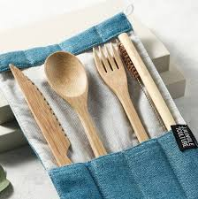
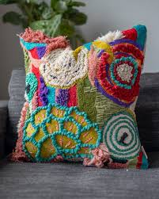

Our Commitment to Sustainability
Eco-Friendly Materials
At GreenHome Essentials, we're committed to using materials that minimize environmental impact. Our carefully selected sustainable materials include:

Bamboo
Fast-growing and biodegradable, bamboo is a versatile material used in our kitchenware and furniture.

Organic Cotton
Grown without harmful pesticides, our organic cotton is used in bedding and home textiles.
Recycled Glass
We repurpose glass to create beautiful, sustainable decor items and kitchenware.
Ethical Sourcing
We believe in creating products that are not only good for the environment but also for the people involved in their production. Our ethical sourcing practices include:
- Partnering with suppliers who adhere to fair labor practices
- Ensuring safe working conditions throughout our supply chain
- Supporting local artisans and communities
- Regular audits to maintain high ethical standards
- Transparency in our sourcing and production processes
Carbon Footprint Reduction
Our ambitious goal is to reduce our carbon footprint by 50% by 2025. Here's how we're working towards this goal:
- Transitioning to 100% renewable energy in our warehouses and offices
- Optimizing shipping routes and using eco-friendly packaging to reduce transportation emissions
- Implementing a comprehensive recycling and waste reduction program across all operations
- Encouraging remote work and providing incentives for employees to use public transportation